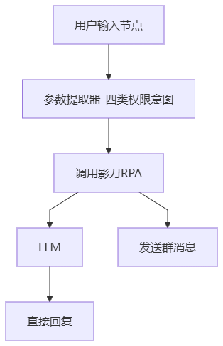
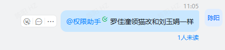
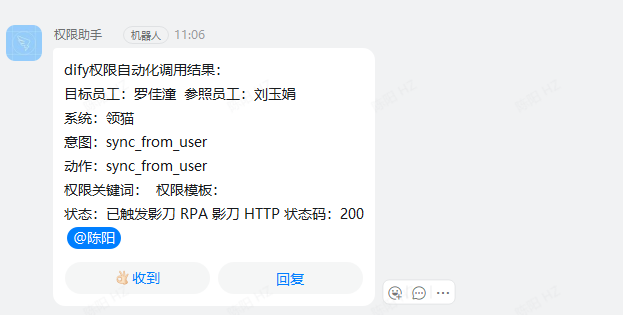
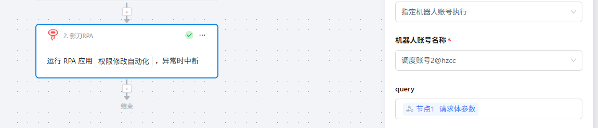
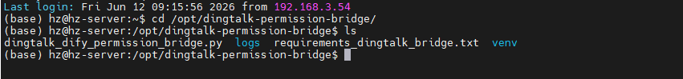
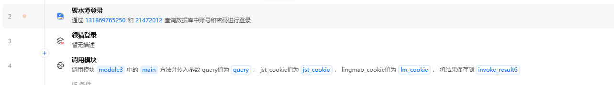

02 Dify & DingTalk
Dify 应用搭建与钉钉服务端监听部署
1. Dify 工作流

| 节点 | 主要作用 |
| 用户输入 | 接收钉钉消息和发送人信息 |
| 参数提取器 | 从自然语言提取权限意图和参数 |
| 调用影刀 RPA | 组装 query 并 POST 到影刀 Webhook |
| LLM / 直接回复 | 生成简短说明并返回 Dify 输出 |
| 发送群消息 | 向钉钉群发送结果通知 |
钉钉请求与 Dify 回执


影刀 HTTP 调用节点

核心请求体只传一个 query 字段，其中包含多行 key=value 参数，包括 intent_type、employee_name、target_system、action、permission_keyword、need_confirm、request_id 和 dry_run。
2. 钉钉服务端桥接部署
桥接服务部署在 /opt/dingtalk-permission-bridge/，由 Python 脚本接收钉钉 Stream 消息并调用 Dify API，通过 systemd 管理运行。

实时日志可通过 sudo journalctl -u dingtalk-permission-bridge -f 查看；修改环境变量后使用 sudo systemctl restart dingtalk-permission-bridge 重启。
3. 影刀主流程入口
